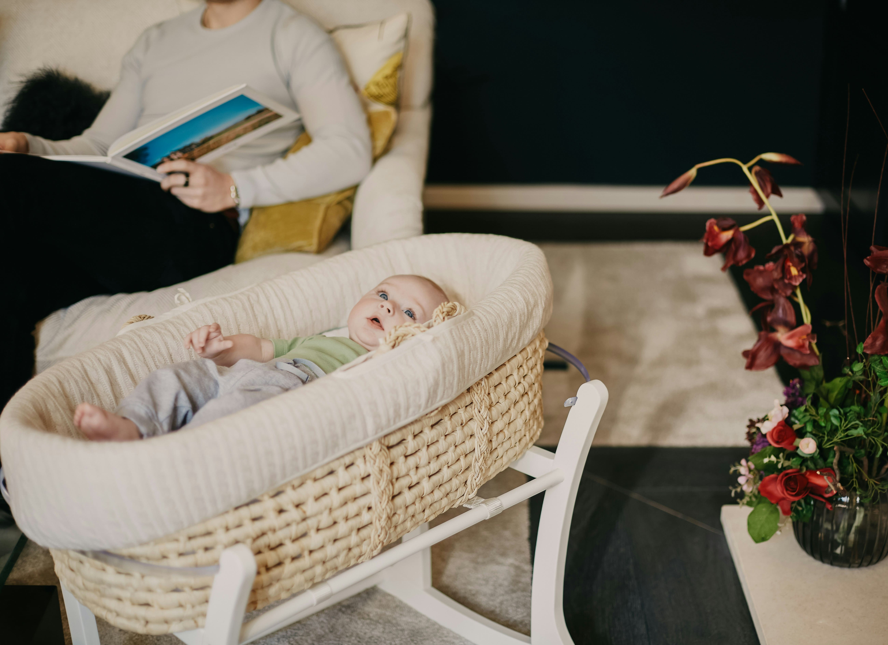

Eighteen hours a day. That is how much time your newborn will spend in their nursery sleeping in the early weeks. It is the room they will know better than any other. And it deserves a bit more thought than just picking out a cute colour scheme and a matching cot set.
The good news is that setting up a non-toxic nursery does not require a limitless budget or a complete renovation. It requires knowing which things actually matter — and spending your energy and money in those places. This guide tells you exactly where that is.
"The nursery is where your baby will spend most of their first year. It's worth making it the safest, cleanest room in the house."
Understanding indoor air quality
Indoor air is actually two to five times more polluted than outdoor air in many homes. In a newly decorated nursery with fresh paint and new furniture that number can be even higher. The main culprits are VOCs from paint, formaldehyde from furniture and flooring, and fragrance from cleaning products. Babies breathe faster relative to their body size than adults do, which means they take in more of whatever is in the air. Their developing systems also cannot detoxify these substances the way an adult body can. Worth taking seriously.
Start with the paint

Regular paint off-gasses chemicals into the air for months and sometimes years after you apply it. In a nursery where your baby will be breathing for 18 hours a day, this matters. Choose a zero-VOC or low-VOC paint and paint the room at least 8 to 12 weeks before your due date so it has time to fully cure. Keep windows open while painting and for a few weeks after. Most major paint brands have zero-VOC lines now at no significant price difference. If your nursery already has existing paint that has been on the walls for years, do not stress — well-cured paint is much less of a concern than fresh paint.
Zero-VOC Nursery Paint
Zero-VOC interior paint in beautiful nursery-friendly colours. No harmful off-gassing, safe for baby from day one, and beautiful finish.
View on Amazon → As an Amazon Associate we earn from qualifying purchases at no extra cost to you.The most important purchase: the mattress
If there is one thing worth spending properly on in the nursery, it is the mattress. Your baby's face will be pressed against it for every single sleep for years. Conventional mattresses are made with polyurethane foam from petrochemicals, chemical fire retardants, and waterproofing chemicals called PFAS — also known as forever chemicals because they do not break down. These materials off-gas the entire time the mattress is in use.
Choose a mattress made from natural materials instead:
- Natural latex — derived from rubber trees, inherently antimicrobial and breathable
- Organic wool — naturally fire-resistant without chemical treatment, and highly breathable
- Organic cotton — grown without pesticides and processed without harsh chemicals
Look for GOTS (Global Organic Textile Standard) or OEKO-TEX 100 certification. Yes, organic mattresses cost more — typically $200-$600 compared to $50-$150 for conventional options. But this is the one place in the nursery where the investment is most justified by the hours of daily exposure.
Organic Baby Cot Mattress
GOTS certified organic cotton and natural wool cot mattress — no flame retardants, no polyurethane foam, no chemical waterproofing. The safest surface for your baby to sleep on.
View on Amazon → As an Amazon Associate we earn from qualifying purchases at no extra cost to you.Furniture: solid wood only
Many affordable nursery furniture pieces — cots, dressers, changing tables — are made from MDF (medium-density fibreboard) or particle board. These engineered wood products are held together with formaldehyde-based adhesives that off-gas continuously, potentially for years.
Choose furniture made from solid wood wherever possible, especially for the cot and changing table where your baby spends the most time. Hardwoods like oak, maple, and beech are extremely durable and contain no synthetic adhesives. Softwoods like pine are less durable but still far safer than engineered wood products.
Second-hand solid wood furniture is an excellent option from both a financial and environmental perspective. Older solid wood pieces have already off-gassed most of their VOCs from any finishes applied during manufacture, and they're often better quality than modern equivalents. Check second-hand marketplaces, estate sales, and charity shops — vintage wooden cots can be beautiful.
Flooring and rugs
Wall-to-wall synthetic carpet in nurseries traps dust mites, pet dander, VOCs absorbed from other sources, and allergens. It's also difficult to clean thoroughly. Hard flooring — solid timber, bamboo, or cork — is a healthier choice that's easier to keep clean.
If you want softness and warmth in the nursery, add a natural fibre rug — wool, cotton, or jute — rather than a synthetic carpet. Avoid rugs with stain-resistant or water-resistant treatments, which typically contain PFAS. A machine-washable organic cotton rug is ideal — you can keep it truly clean rather than just vacuumed.
Natural Fibre Nursery Rug
A soft, washable organic cotton or wool nursery rug — no synthetic fibres, no stain-resistant chemical treatments. Safe for tummy time and crawling.
View on Amazon → As an Amazon Associate we earn from qualifying purchases at no extra cost to you.Soft furnishings and textiles
Choose GOTS-certified organic cotton for all nursery textiles — fitted sheets, swaddle blankets, sleeping bags, and any fabric your baby's skin will contact directly. Organic cotton is grown without synthetic pesticides and herbicides, and is processed without harsh bleaching agents or chemical softeners. It's also more durable than conventional cotton, typically lasting through multiple children.
Avoid synthetic fabrics (polyester, acrylic, nylon) for items that will be in close contact with your baby's skin. These petroleum-derived materials can shed microplastics and don't breathe as well as natural fibres, potentially contributing to overheating.
Organic Cotton Cot Sheet Set
GOTS certified organic cotton fitted sheets — soft, durable, free from pesticides and harsh processing chemicals. Gentler on baby skin from the very first night.
View on Amazon → As an Amazon Associate we earn from qualifying purchases at no extra cost to you.Cleaning the nursery safely
Once you've set up a non-toxic nursery, maintain it with non-toxic cleaning products. A simple solution of diluted white vinegar (1 part vinegar to 4 parts water) is effective for most surface cleaning and safe for all the surfaces in your nursery. Add a few drops of tea tree oil for extra antimicrobial action if desired.
For baby laundry, use a fragrance-free, plant-based detergent. Avoid fabric softener (it reduces the absorbency of nappies and towels and leaves chemical residue on fabrics) and aerosol sprays. Never use air fresheners or scented candles in the nursery — these introduce airborne chemicals into a space where your baby breathes deeply for many hours each day.
Air quality improvements
Beyond choosing low-emission materials, several practical steps can improve nursery air quality:
- Ventilate daily — open windows for at least 15 minutes every day to exchange stale indoor air with fresh outdoor air
- Add air-purifying plants — spider plants, pothos, and peace lilies have been shown to absorb VOCs. Keep plants out of reach of babies once mobile.
- Use a HEPA air purifier — particularly useful in the first few months after decorating or if you have pets
- Maintain low humidity — 40-50% relative humidity reduces dust mite populations and mould growth
HEPA Air Purifier for Nursery
A compact HEPA air purifier removes 99.97% of particles including dust, pet dander, VOCs, and allergens. Runs quietly on low speed throughout the night.
View on Amazon → As an Amazon Associate we earn from qualifying purchases at no extra cost to you.Prioritising your non-toxic nursery budget
Creating a completely non-toxic nursery from scratch can feel overwhelming and expensive. The key is to prioritise — to spend your budget where the exposure risk is highest and the impact is greatest, rather than trying to make every single item perfect.
The priority order, based on hours of daily exposure, is: cot mattress first (highest priority — your baby sleeps on this for 18+ hours per day), then paint and flooring (your baby breathes the air in this room continuously), then cot and furniture (second most contact after mattress), then soft furnishings and textiles, and finally cleaning products and personal care items.
Second-hand safety considerations
Second-hand nursery furniture is an excellent eco and financial choice for most items — but there are important safety considerations. Always buy a new cot mattress, even if the cot itself is second-hand. Research consistently shows that second-hand mattresses are associated with increased SIDS risk, likely due to bacterial growth in used mattress materials. This is the one item where new is always the recommendation.
Check second-hand cots against current safety standards — slat spacing, mattress fit, and the absence of drop sides (which are no longer considered safe). If in doubt about whether a cot meets current standards, a new solid wood cot is a worthwhile investment.
The long-term benefits of a non-toxic nursery
The benefits of creating a low-toxin environment for your baby extend well beyond the nursery years. Children who grow up in homes with lower chemical loads tend to have lower rates of asthma, eczema, and allergies. Early reduction of endocrine-disrupting chemical exposure may have positive effects on hormonal health throughout life. The habits formed during nursery setup — choosing natural materials, reading ingredient lists, prioritising ventilation — tend to persist and spread throughout the home over time.
Think of a non-toxic nursery not as a one-time project but as the beginning of a longer journey toward a healthier home for your whole family. Each small choice builds on the last, and the cumulative effect over years is significant.
Get your free personalized plan
Complete pregnancy guide with nursery setup checklist and eco product recommendations — free, no sign-up required.
Create my free plan →